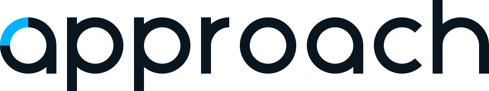

Не заливайте всё голубым
Используйте Cyan только для ключевых акцентов и действий.

Design system IDM-PLUS / 03 / Palette
Палитра IDM-PLUS обеспечивает узнаваемый и последовательный опыт во всех продуктах и материалах бренда.
Каждый цвет в системе выполняет свою функцию. Используйте их согласно роли, чтобы сохранять ясность и иерархию интерфейсов.
Основной бренд-акцент. Активные элементы, ссылки, ключевые действия.
Вспомогательный цвет для границ, иконок, вторичного текста и разделителей.
Базовый фон интерфейса. Обеспечивает чистоту и контраст.
Основной цвет текста для максимальной читаемости.
Используйте Cyan только для ключевых акцентов и действий.
Текст и элементы интерфейса должны читаться на любом фоне.
Семантические цвета используются для состояния, а не для бренда.
Выделяйте только один ключевой элемент с помощью Cyan.
Используются для передачи состояния. Не заменяют бренд-цвета.